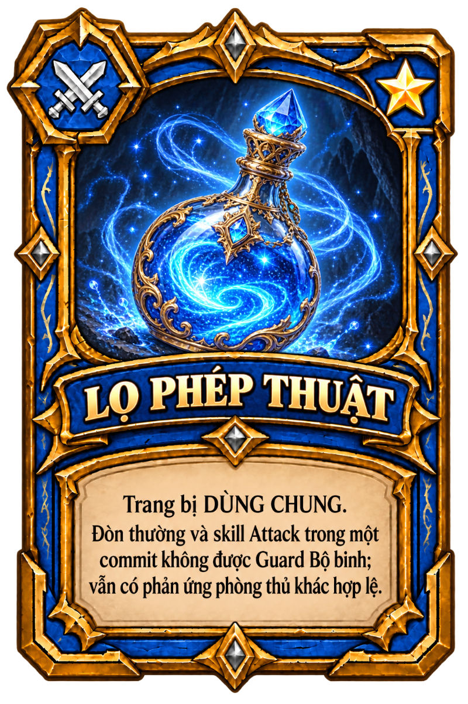
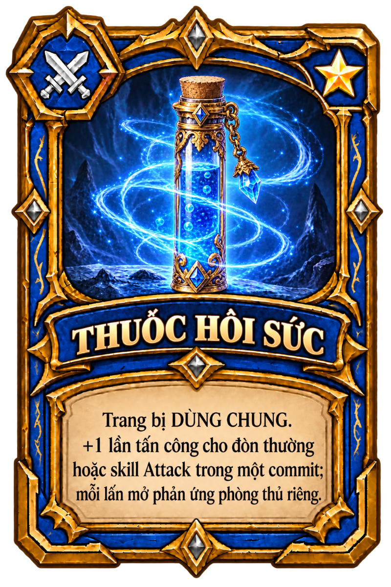
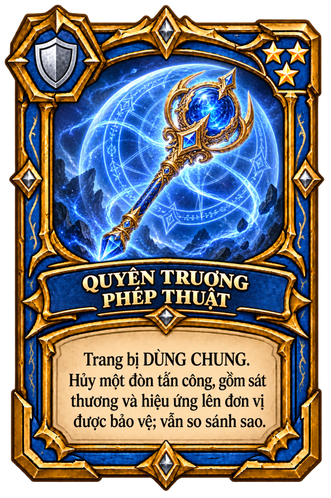
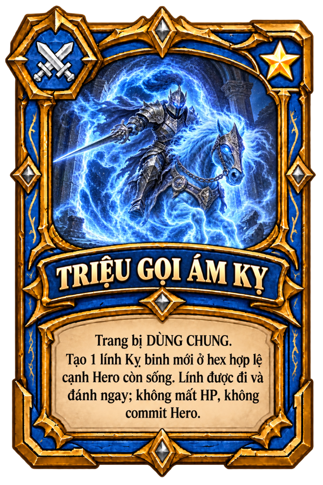
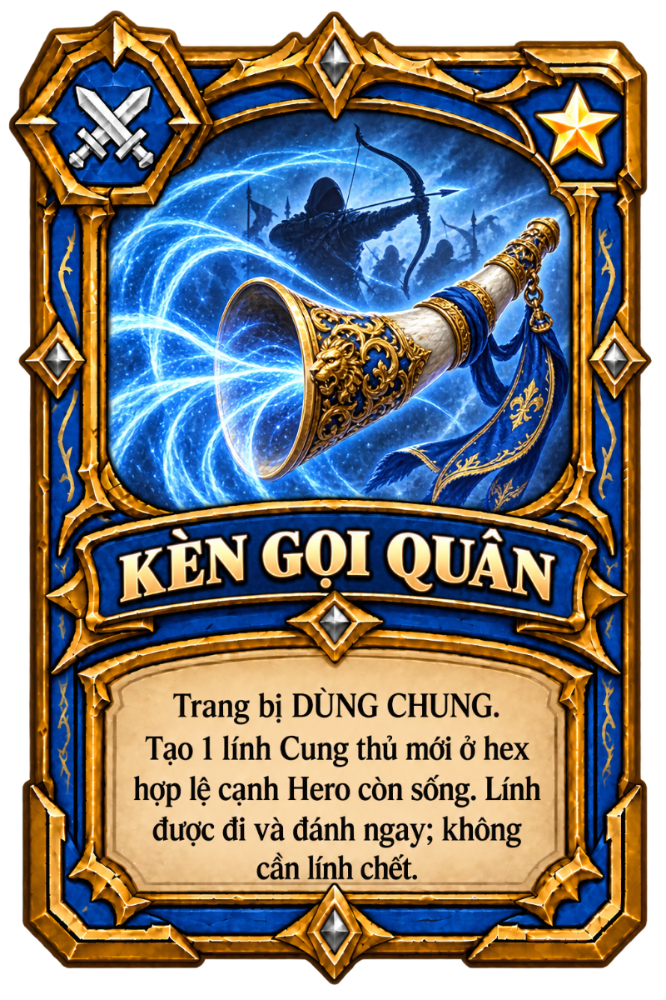
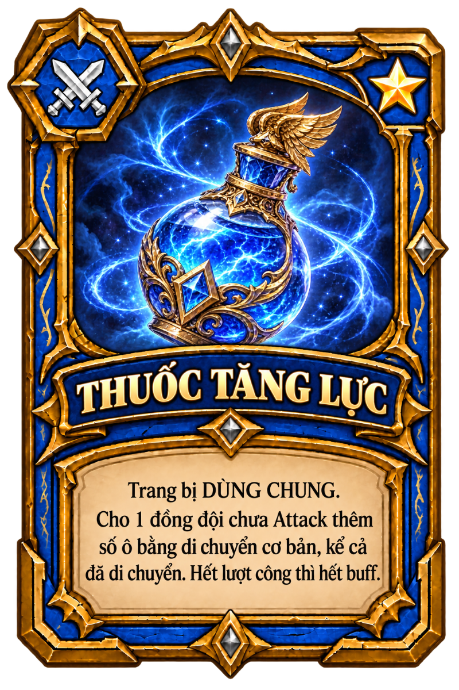
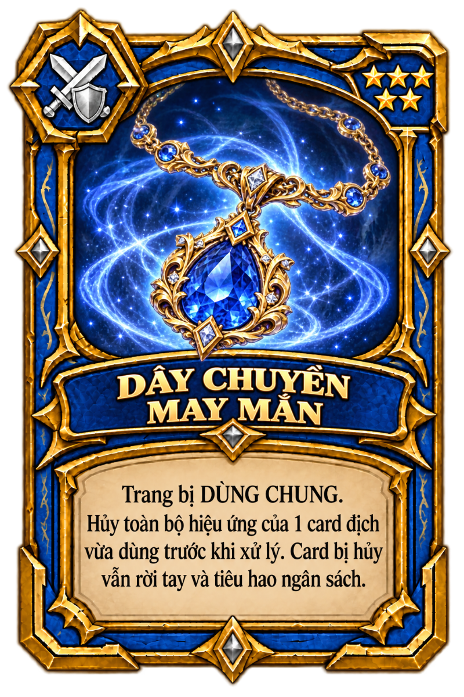
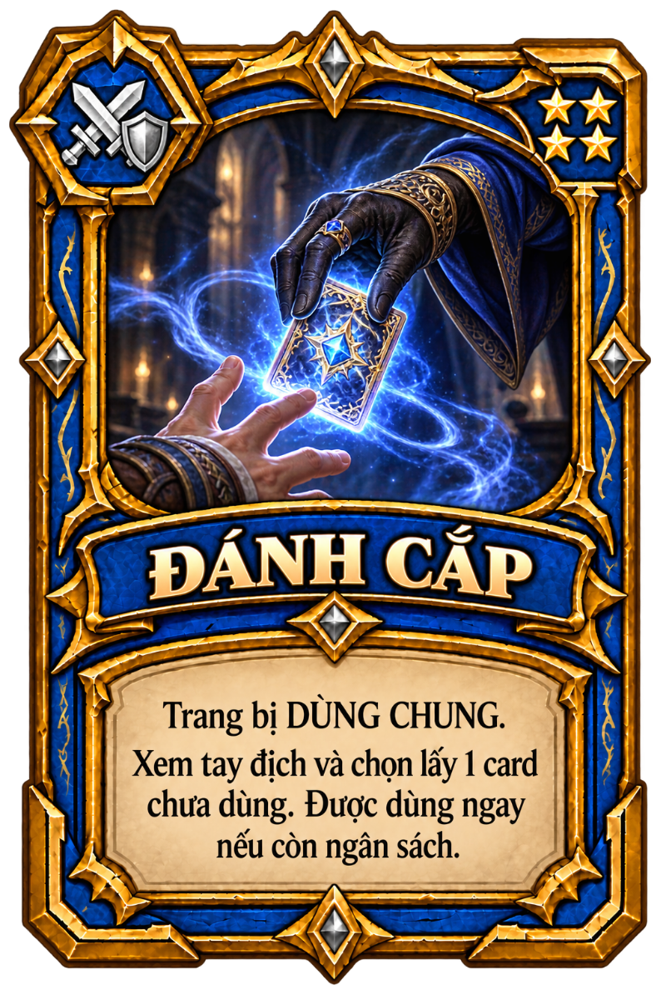
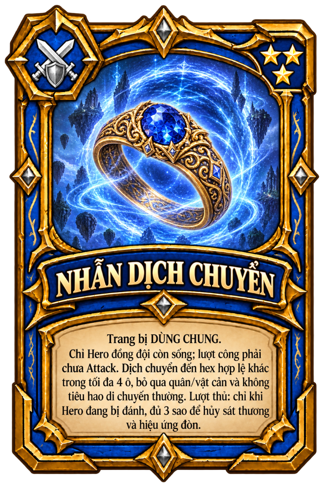
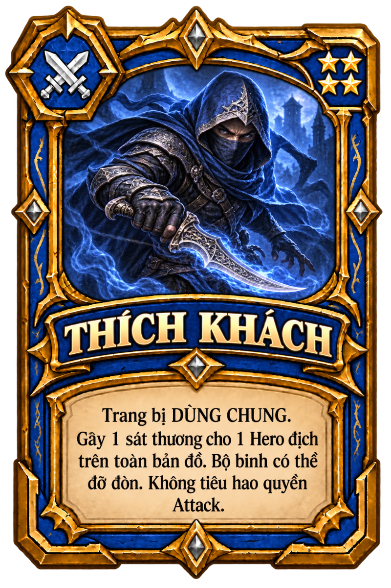

Lọ Phép Thuật
Công · 1 sao · 1 lá trong deck
Tải PNG 800 × 1200

Hiệu ứng trong catalog
Đòn thường và skill Attack trong một commit không được Guard Bộ binh; vẫn có phản ứng phòng thủ khác hợp lệ.
11 mẫu · 23 lá trong deck. PNG 800 × 1200, nền trong suốt ngoài khung. Dữ liệu theo catalog DozenWar trên GitHub.
Công · 1 sao · 1 lá trong deck
Tải PNG 800 × 1200
Đòn thường và skill Attack trong một commit không được Guard Bộ binh; vẫn có phản ứng phòng thủ khác hợp lệ.
Công · 1 sao · 2 lá trong deck
Tải PNG 800 × 1200
+1 lần tấn công cho đòn thường hoặc skill Attack trong một commit; mỗi lần mở phản ứng phòng thủ riêng.
Thủ · 3 sao · 2 lá trong deck
Tải PNG 800 × 1200
Hủy một đòn tấn công, gồm sát thương và hiệu ứng lên đơn vị được bảo vệ; vẫn so sánh sao.
Công · 1 sao · 2 lá trong deck
Tải PNG 800 × 1200
Tạo 1 lính Kỵ binh mới ở hex hợp lệ cạnh Hero còn sống. Lính được đi và đánh ngay; không mất HP, không commit Hero.
Công · 1 sao · 2 lá trong deck
Tải PNG 800 × 1200
Tạo 1 lính Cung thủ mới ở hex hợp lệ cạnh Hero còn sống. Lính được đi và đánh ngay; không cần lính chết.
Công và thủ · 4 sao · 4 lá trong deck
Tải PNG 800 × 1200
Hồi 1 HP cho Bộ binh hoặc Hero đồng đội còn sống, thiếu HP ở bất kỳ đâu. Khi đang nhận đòn phải hồi đủ để sống.
Công · 1 sao · 2 lá trong deck
Tải PNG 800 × 1200
Cho 1 đồng đội chưa Attack thêm số ô bằng di chuyển cơ bản, kể cả đã di chuyển. Hết lượt công thì hết buff.
Công và thủ · 5 sao · 2 lá trong deck
Tải PNG 800 × 1200
Hủy toàn bộ hiệu ứng của 1 card địch vừa dùng trước khi xử lý. Card bị hủy vẫn rời tay và tiêu hao ngân sách.
Công và thủ · 4 sao · 2 lá trong deck
Tải PNG 800 × 1200
Xem tay địch và chọn lấy 1 card chưa dùng. Được dùng ngay nếu còn ngân sách.
Công và thủ · 3 sao · 2 lá trong deck
Tải PNG 800 × 1200
Chỉ Hero đồng đội còn sống; lượt công phải chưa Attack. Dịch chuyển đến hex hợp lệ khác trong tối đa 4 ô, bỏ qua quân/vật cản và không tiêu hao di chuyển thường. Lượt thủ: chỉ khi Hero đang bị đánh, đủ 3 sao để hủy sát thương và hiệu ứng đòn.
Công · 4 sao · 2 lá trong deck
Tải PNG 800 × 1200
Gây 1 sát thương cho 1 Hero địch trên toàn bản đồ. Bộ binh có thể đỡ đòn. Không tiêu hao quyền Attack.